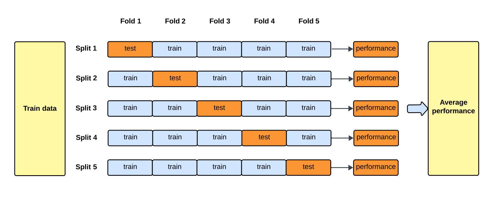

iPAS AI應用規劃師 經典題庫
L22301 統計學在大數據中的應用
出題方向
1
描述性統計在大數據的應用
2
推論性統計與大數據
3
機率分佈與大數據
4
抽樣方法在大數據的挑戰與應用
5
假設檢定在大數據的議題
6
迴歸分析與大數據
7
實驗設計與 A/B 測試
8
統計學與機器學習的結合
#1
★★★★★
在大數據環境下，計算整個數據集的精確平均值（Mean）可能非常耗時。以下哪種方法常被用來快速估計平均值或處理流式數據（Streaming Data）的平均值？
答案解析
移動平均和 EWMA 是處理時間序列數據或流式數據的常用技術。它們不需要一次讀取所有數據，而是根據一個窗口內（移動平均）或給予近期數據更高權重（EWMA）的方式來更新平均值估計。這使得它們能夠在數據不斷流入時，動態地、相對高效地追蹤數據的平均趨勢。只計算部分數據（選項 A）會有偏差。最大最小值的中間值（選項 C）不是平均值。眾數（選項 D）適用於類別數據或描述集中趨勢，不等於平均值。
#2
★★★★★
在對大數據集進行假設檢定時，即使是很小的效應（Effect Size）也可能達到統計顯著性（Statistical Significance, p-value < α）。這現象被稱為什麼問題，我們應該更關注哪個指標？
答案解析
在大數據情境下，由於樣本數 N 非常大，標準誤（Standard Error）會變得非常小。這導致即使效應大小（例如，兩組平均值的差異）非常微小，計算出的檢定統計量也可能很大，從而得到一個極小的 p 值，輕易達到統計顯著。然而，這個微小的效應在實際應用中可能毫無意義。因此，除了看 p 值，更應該關注效應大小（Effect Size，如 Cohen's d, R-squared）或實際顯著性，判斷這個效應在真實世界中是否重要、是否有價值。這個現象本身不是 p-hacking（指操縱數據或分析方法以獲得顯著結果），但容易讓人誤判結果的重要性。
#3
★★★★
為什麼即使擁有整個大數據集（接近母體），有時仍然需要進行抽樣（Sampling）？
答案解析
儘管大數據提供了更全面的訊息，但處理整個數據集可能需要巨大的計算資源和時間，尤其是在模型開發和迭代的早期階段。抽樣可以在保證一定代表性的前提下，顯著減少數據量，從而加快分析速度、降低硬體成本，方便進行快速的探索性數據分析（Exploratory Data Analysis, EDA）、演算法原型設計和參數調優。當然，最終的模型評估和部署可能仍需使用更大部分甚至全部數據。抽樣本身不增加隨機性，結果準確性取決於抽樣方法和樣本大小，機器學習可以用全部數據訓練。
#4
★★★★★
在進行 A/B 測試（A/B Testing）以比較兩種網頁設計（版本 A 和版本 B）的轉換率時，虛無假設（Null Hypothesis, H0）通常是什麼？
答案解析
假設檢定的目的是試圖推翻虛無假設。在 A/B 測試中，我們通常想要證明新版本（B）比舊版本（A）更好或有差異。因此，虛無假設 H0 通常設定為「兩者沒有差異」或「新版本沒有更好」。對立假設（Alternative Hypothesis, H1 或 Ha）則是我們希望證明的，例如「兩者有差異」或「版本 B 轉換率更高」。檢定的目標是收集足夠的證據來拒絕 H0，從而支持 H1。

#5
★★★★
在機器學習模型的評估中，交叉驗證（Cross-Validation）的主要目的是什麼？
答案解析
交叉驗證是一種統計學上的模型評估技術。它將原始數據集劃分成 K 個子集（折，Folds），輪流將其中 K-1 個子集作為訓練數據，剩下的 1 個子集作為驗證數據，重複 K 次。這樣可以讓每個數據點都有機會被用於訓練和驗證，從而得到對模型在獨立數據集上表現的更穩定、更可靠的估計，避免了單次劃分訓練集/驗證集可能帶來的隨機性偏差。它有助於評估模型的泛化能力，並用於模型選擇和超參數調整。交叉驗證通常會增加總訓練時間。

#6
★★★★
在建立迴歸模型時，如果模型在訓練數據上表現很好，但在測試數據上表現很差，這種現象稱為什麼？統計上通常如何緩解這個問題？
答案解析
過擬合是指模型過度學習了訓練數據中的雜訊和細節，導致其對訓練數據擬合得非常好，但在新的、未見過的數據（測試數據）上泛化能力差。統計上，緩解過擬合的常用方法包括：1. 正規化（Regularization）：在模型的損失函數中加入懲罰項，限制模型參數的大小（如 L1 Lasso, L2 Ridge）。2. 簡化模型：減少特徵數量、降低模型複雜度（如減少多項式次數、減少決策樹深度）。3. 增加數據量（如果可能）。4. 交叉驗證：用於選擇合適的模型複雜度或正規化參數。欠擬合是模型過於簡單，未能捕捉數據的基本模式。

#7
★★★
信賴區間（Confidence Interval）提供了一個關於母體參數（如平均值）的估計範圍。一個 95% 的信賴區間意味著什麼？
答案解析
信賴區間的解釋是基於頻率學派觀點的。一個 95% 信賴區間並不是說母體參數有 95% 的機率落在這個特定的區間裡（因為母體參數是固定的，只是未知；而區間是隨機的，依賴於抽樣）。正確的解釋是關於這個「過程」的：如果我們從同一個母體中反覆進行抽樣，並且每次都根據樣本計算出一個 95% 信賴區間，那麼長期來看，這些計算出來的區間中大約有 95% 會包含（覆蓋）那個未知的、固定的真實母體參數。

#8
★★★
常態分佈（Normal Distribution），也稱為高斯分佈（Gaussian Distribution），具有什麼重要特性？
答案解析
常態分佈是一種鐘形（Bell-shaped）的對稱分佈。其主要特性包括：1. 關於平均值對稱。2. 平均值（Mean）、中位數（Median）和眾數（Mode）位於同一點。3. 分佈由兩個參數完全確定：平均值 μ（決定中心位置）和標準差 σ（決定分佈的寬窄）。根據經驗法則（Empirical Rule），約 68% 的數據落在平均值 ±1 個標準差內，約 95% 落在 ±2 個標準差內，約 99.7% 落在 ±3 個標準差內。

#9
★★★★
在描述性統計中，標準差（Standard Deviation）主要衡量的是什麼？
答案解析
標準差是變異數（Variance）的平方根，是衡量數據點偏離其平均值程度的最常用指標。標準差越大，表示數據點越分散，波動越大；標準差越小，表示數據點越集中在平均值附近。集中趨勢通常由平均值、中位數、眾數描述。對稱性由偏態（Skewness）描述。變數間關係強度由相關係數（Correlation Coefficient）描述。
#10
★★★★
當同時進行多次假設檢定時（例如，比較多個廣告版本的點擊率），如果不進行任何校正，會發生什麼問題？
答案解析
第一類型錯誤是指當虛無假設（H0）為真時，卻錯誤地拒絕了 H0。單次檢定的第一類型錯誤率通常控制在顯著水準 α（例如 0.05）。但如果同時進行 m 次獨立的檢定，並且每次都使用 α 水準，那麼至少犯一次第一類型錯誤的整體機率（族錯誤率, Family-Wise Error Rate, FWER）會顯著增大，約為 1 - (1 - α)^m。例如，進行 20 次檢定，FWER 可能高達 1 - (0.95)^20 ≈ 0.64。這就是多重比較問題。為了解決這個問題，需要使用 Bonferroni 校正、Holm-Bonferroni 方法、控制錯誤發現率（False Discovery Rate, FDR）等方法來調整顯著水準或 p 值。

#11
★★★★
在 A/B 測試中，統計檢定力（Statistical Power）指的是什麼？
答案解析
統計檢定力是指當實際上存在差異或效應時（即對立假設為真），我們的檢定能夠成功偵測到這個差異並拒絕虛無假設的能力。它等於 1 減去犯第二類型錯誤（Type II Error, β）的機率（β 是指當對立假設為真時，錯誤地未能拒絕虛無假設的機率）。通常希望檢定力越高越好（例如 達到 80% 或 90%），意味著實驗有較大的把握能偵測到真實存在的效應。檢定力受到效應大小、樣本數、顯著水準 α 和數據變異性的影響。

#12
★★★
在大數據分析中，哪種抽樣方法特別適用於母體內部存在顯著異質性，且希望確保樣本能反映各個子群體特徵的情況？
答案解析
分層抽樣首先根據已知的重要特徵將母體劃分為若干個內部同質、層間異質的子群體（層），然後在每個層內獨立進行隨機抽樣。這樣可以確保即使某些層的規模較小，也能在樣本中有足夠的代表，從而使得樣本結構更貼近母體結構，提高估計的精確度，特別是在母體異質性很高時。簡單隨機抽樣不考慮母體結構。系統抽樣可能因週期性引入偏差。便利抽樣是非機率抽樣，代表性無法保證。

#13
★★★
L1 正規化（Lasso Regression）和 L2 正規化（Ridge Regression）都是用於線性迴歸中防止過擬合的技術。它們的主要區別在於？
答案解析
L1 和 L2 正規化都是在最小化殘差平方和的基礎上，增加一個對模型係數大小的懲罰項。L1（Lasso）的懲罰項是係數絕對值之和（λΣ|β|），其幾何形狀使得在優化過程中，解更容易出現在座標軸上，導致某些不重要的特徵係數被精確地壓縮為零，從而具有內建的特徵選擇效果。L2（Ridge）的懲罰項是係數平方和（λΣβ²），其懲罰效果是將所有係數向零收縮，但通常不會使其恰好等於零。因此，Lasso 可以用於特徵選擇，而 Ridge 更側重於處理共線性問題（雖然選項 D 的後半句 Ridge 更能處理共線性是事實，但主要區別在於對係數的處理方式和特徵選擇效果）。兩者都可用於迴歸，也可擴展用於分類。

#14
★★★★
在評估二元分類模型性能時，混淆矩陣（Confusion Matrix）中的「精確率」（Precision）計算公式是什麼？它衡量了什麼？
答案解析
混淆矩陣包含四個值：真正（True Positive, TP）、假正（False Positive, FP）、真負（True Negative, TN）、假負（False Negative, FN）。精確率（Precision）的計算公式是 TP / (TP + FP)。它回答的問題是：「在所有被模型預測為正樣本的結果中，有多少比例是真正的正樣本？」它衡量了模型預測結果的「精確度」，關注的是避免將負樣本錯誤地預測為正樣本。召回率（Recall）或稱敏感度（Sensitivity）是 TP / (TP + FN)，關注的是避免遺漏真正的正樣本。準確率（Accuracy）是 (TP + TN) / Total。特異度（Specificity）是 TN / (TN + FP)。

#15
★★★
偏態（Skewness）是用來衡量數據分佈不對稱程度的指標。如果一個分佈的尾部向右延伸較長，則稱為什麼偏態？
答案解析
偏態描述數據分佈的不對稱方向。正偏態（右偏態）表示分佈的右側尾部比左側尾部長，大部分數據集中在左側，平均值通常大於中位數。負偏態（左偏態）則相反，左側尾部長，大部分數據集中在右側，平均值通常小於中位數。零偏態表示分佈完全對稱（如常態分佈）。峰態（Kurtosis）描述分佈的尖峭程度，高狹峰態指分佈比常態分佈更尖峭。

#16
★★
中心極限定理（Central Limit Theorem, CLT）在大數據推論統計中有何重要意義？
答案解析
中心極限定理是推論統計的基石之一。它指出，無論原始母體的分佈形狀如何（只要方差有限），從該母體中抽取的大小為 n 的隨機樣本，當樣本量 n 足夠大時（通常認為 n ≥ 30），其樣本平均值（Sample Mean）的抽樣分佈（Sampling Distribution）會近似於一個正態分佈。這個正態分佈的平均值等於母體平均值 μ，標準差（稱為標準誤 Standard Error）等於母體標準差 σ 除以 √n。這使得我們可以使用基於正態分佈的理論（如 Z 檢定、t 檢定）來對母體平均值進行推斷，即使我們不知道母體的確切分佈。

#17
★★
泊松分佈（Poisson Distribution）通常用於模擬什麼類型的事件？
答案解析
泊松分佈是一種離散機率分佈，用於描述在一個固定的時間、空間、距離或其他度量單位內，某個事件平均發生 λ 次的條件下，實際發生 k 次的機率。它適用於事件發生相對稀有，但發生機會遍佈整個區間的情況，且各次事件的發生是獨立的。例如：網站每小時的訪問次數、一本書每頁的錯字數、放射性物質單位時間內衰變的次數等。選項A對應二項分佈（Binomial Distribution）。選項C對應連續分佈如常態分佈。選項D對應指數分佈（Exponential Distribution）或幾何分佈（Geometric Distribution）。
#18
★★★
在線性迴歸模型中，決定系數（Coefficient of Determination, R-squared）衡量的是什麼？
答案解析
R-squared（R²）是衡量迴歸模型擬合優度（Goodness of Fit）的常用指標。它的值介於 0 和 1 之間（對於簡單線性迴歸），表示應變數（Y）的總變異量（Total Sum of Squares, SST）中有多少比例可以通過模型中的自變數（X）來解釋（Explained Sum of Squares, SSR）。R² = SSR / SST = 1 - SSE / SST（其中 SSE 是殘差平方和）。R² 越接近 1，表示模型對數據的解釋能力越強；越接近 0，表示模型解釋能力越弱。選項A由係數的正負號判斷。選項C由 RMSE 或 MAE 等指標衡量。選項D由係數的 p 值判斷。

#19
★★
在大數據背景下，進行抽樣時可能遇到的「倖存者偏差」（Survivorship Bias）指的是什麼？
答案解析
倖存者偏差是一種常見的邏輯謬誤和樣本選擇偏差。當我們在分析中只考慮了那些成功通過了某個過程的「倖存者」，而忽略了那些未能存活的，就會導致結論偏差。
一個經典的例子是二戰期間，盟軍希望加固轟炸機的裝甲。他們分析了返航飛機的彈孔分佈，發現彈孔多集中在機翼和機尾，而引擎和駕駛艙部分則很少。直覺的結論是加固彈孔多的地方。然而，統計學家亞伯拉罕·沃德（Abraham Wald）指出，這正是倖存者偏差：分析的樣本只包含了「倖存」返航的飛機。返航飛機上沒有彈孔的部位（如引擎），恰恰是真正致命的弱點，因為被擊中這些部位的飛機都未能返航。因此，應該加固的是那些返航飛機上「沒有」彈孔的地方。
同樣地，只研究成功的公司來總結成功經驗，可能會忽略了許多失敗公司也採取了相同策略但仍失敗的情況。
一個經典的例子是二戰期間，盟軍希望加固轟炸機的裝甲。他們分析了返航飛機的彈孔分佈，發現彈孔多集中在機翼和機尾，而引擎和駕駛艙部分則很少。直覺的結論是加固彈孔多的地方。然而，統計學家亞伯拉罕·沃德（Abraham Wald）指出，這正是倖存者偏差：分析的樣本只包含了「倖存」返航的飛機。返航飛機上沒有彈孔的部位（如引擎），恰恰是真正致命的弱點，因為被擊中這些部位的飛機都未能返航。因此，應該加固的是那些返航飛機上「沒有」彈孔的地方。
同樣地，只研究成功的公司來總結成功經驗，可能會忽略了許多失敗公司也採取了相同策略但仍失敗的情況。
#20
★★★
在假設檢定中，P 值（P-value）的定義是什麼？
答案解析
P 值是在假設虛無假設 H0 為真的前提下，計算出來的一個條件機率。它表示我們觀察到的樣本統計量（或由其計算出的檢定統計量）以及比它更極端（更能反駁 H0）的結果出現的總機率。如果 P 值很小（通常小於預設的顯著水準 α，如 0.05），則意味著在 H0 為真的情況下，觀察到這樣的樣本結果是非常罕見的。因此，我們就有理由拒絕 H0，轉而支持對立假設 H1。P 值不是 H0 為真的機率，也不是犯第一類型錯誤的實際機率（α 是我們預設的可接受的最大第一類型錯誤率）。
#21
★★★
在大數據視覺化中，當需要展示大量數據點的分佈並觀察其密度時，以下哪種圖表比傳統的散佈圖（Scatter Plot）更能有效避免點重疊問題？
答案解析
當數據點非常多時，傳統的散佈圖會出現點重疊（Overplotting）的問題，難以看清數據的真實密度分佈。熱力圖將二維空間劃分成網格，用顏色深淺表示每個網格內數據點的數量或密度。六邊形分箱圖類似，但使用六邊形網格。這兩種圖都能有效地展示大量數據點的聚集情況，避免了單個點重疊的問題。

#22
★★★
在進行線上 A/B 測試以比較兩種推薦演算法的效果時，衡量效果的主要指標（Metric）應該具備什麼特性？
答案解析
A/B 測試的目的是評估哪個版本更能達成預期的業務目標。因此，選擇的評估指標必須能夠直接或間接地反映這些目標，並且是可量化的，以便進行統計比較。例如，如果目標是提高用戶參與度，指標可以是點擊率、頁面停留時間、購買次數等。如果目標是提高營收，指標可以是平均訂單金額、總營收等。指標可以是比例、平均值或其他形式。選擇變異數小的指標通常更容易達到統計顯著性。指標不一定需要服從常態分佈，可以使用非參數檢定或轉換。
#23
★★★
偏差-方差權衡（Bias-Variance Tradeoff）是統計學習中的一個核心概念。高偏差（High Bias）的模型通常意味著什麼？
答案解析
偏差（Bias）衡量的是模型的預測值與真實值之間的系統性差異，即模型本身的假設與真實情況的差距。高偏差通常發生在模型過於簡單的情況下（例如，用線性模型去擬合非線性數據），模型無法學習到數據的複雜模式，導致欠擬合（Underfitting）。這意味著模型在訓練數據和測試數據上表現都不好。高方差（High Variance）則通常發生在模型過於複雜的情況下，模型對訓練數據的雜訊過度敏感，導致過擬合，即在訓練數據上表現好，但在測試數據上表現差。選項C和D描述的是高方差的情況。

#24
★★★
重尾分佈（Heavy-tailed Distribution）或稱長尾分佈（Long-tailed Distribution）在大數據分析中很常見，例如財富分佈、網站流量分佈。這種分佈的主要特徵是什麼？
答案解析
重尾分佈（如帕累托分佈 Pareto Distribution、柯西分佈 Cauchy Distribution）的特點是其機率密度函數的尾部比指數分佈或常態分佈下降得更慢。這意味著出現遠離中心（非常大或非常小）的極端值的可能性相對較高。在這種分佈下，樣本平均值和變異數可能不穩定，甚至不存在（如柯西分佈），傳統基於常態假設的統計方法可能不再適用。例如，少數富豪可能擁有社會大部分財富，少數熱門網頁可能佔據了絕大部分流量。
#25
★★
在處理大數據的迴歸問題時，如果特徵數量遠大於樣本數量（p >> n），哪種統計方法或模型特別適用於這種情況？
答案解析
當特徵數量 p 遠大於樣本數量 n 時，普通最小平方法（OLS）會遇到問題，解不唯一或不存在，並且極易發生過擬合。正規化方法，如 Lasso（L1）和 Ridge（L2），通過在損失函數中加入對係數大小的懲罰項，可以有效地處理這種高維數據。Lasso 尤其適用，因為它傾向於將許多不重要的特徵係數壓縮為零，從而實現自動特徵選擇，降低模型的有效維度。逐步迴歸也是一種特徵選擇方法，但在高維情況下計算量大且結果可能不穩定。簡單線性迴歸只適用於單一自變數。
#26
★★★
錯誤發現率（False Discovery Rate, FDR）控制是多重假設檢定中的一種常用策略，它控制的是什麼？
答案解析
當進行大量假設檢定時（例如基因表達分析、網站 A/B 測試），我們可能會拒絕很多個虛無假設。FDR 控制的目標是，在所有這些被我們宣稱是「發現」（即拒絕 H0）的結果中，錯誤發現（即 H0 實際上是真的，我們卻拒絕了它）所佔的比例期望值。例如，控制 FDR 在 5% 意味著我們預期在所有宣告的發現中，大約有 5% 是假陽性。相比於嚴格控制 FWER（要求完全沒有假陽性），控制 FDR 是一種更寬鬆但通常在探索性研究中更實用的策略（如 Benjamini-Hochberg 程序）。
#27
★★
在大數據背景下，計算數據的百分位數（Percentiles）或分位數（Quantiles）時，若無法將所有數據載入記憶體，可以使用哪種近似算法？
答案解析
精確計算分位數需要對數據進行排序，這在數據量極大或流式處理時是不可行或成本極高的。因此，發展了許多近似算法來估計分位數。這些算法（如 Greenwald-Khanna (GK) 算法、t-digest）通常只需要對數據進行一次或少數幾次掃描，並維護一個相對較小的數據摘要（Sketch），就能以可接受的記憶體佔用和計算成本，提供帶有誤差保證的分位數估計值。
#28
★★★
在 A/B 測試中，如果實驗結果顯示 P 值為 0.07，而預設的顯著水準 α 為 0.05，我們應該做出什麼結論？
答案解析
假設檢定的決策規則是：如果 P 值小於或等於顯著水準 α，則拒絕虛無假設 H0；如果 P 值大於 α，則未能拒絕 H0。在本例中，P 值 0.07 大於 α = 0.05，因此我們未能拒絕虛無假設（H0：兩個版本沒有差異）。這並不意味著證明了兩個版本完全相同，而是說根據目前的數據和顯著水準，我們沒有足夠強的證據來斷定它們之間存在統計上的顯著差異。
#29
★★
叢集抽樣（Cluster Sampling）與分層抽樣（Stratified Sampling）的主要區別在於？
答案解析
主要區別在於抽樣單元和目標。分層抽樣是將母體按某特徵分層，目標是提高樣本代表性，抽樣單元是層內的個體，從「所有」層中抽取樣本。叢集抽樣是將母體劃分成若干群組（叢集，通常是自然形成的群體如班級、社區），目標通常是降低抽樣成本（尤其是地理分散時），抽樣單元是整個叢集，隨機抽取「部分」叢集，然後調查被選中叢集內的「所有」或「部分」個體。理想的叢集是內部異質（類似母體縮影）、叢集間同質；理想的層是內部同質、層間異質。

#30
★★★
自助法（Bootstrap）是一種基於重抽樣（Resampling）的統計方法，它常用於做什麼？
答案解析
自助法從原始樣本中有放回地（with replacement）重複抽取與原始樣本大小相同的自助樣本（Bootstrap Sample）多次（例如 1000 次）。對每個自助樣本計算感興趣的統計量（如平均值）。這些計算出的統計量的分佈可以被用來近似原始統計量的抽樣分佈。通過觀察這個分佈，我們可以估計原始統計量的標準誤（Standard Error），或者構建其信賴區間，而不需要對原始數據的分佈做太強的假設。這在大數據不易獲得重複獨立樣本或分佈複雜時特別有用。
#31
★★★
相關不等於因果（Correlation does not imply causation）是統計學中的重要原則。觀察到兩個變數 X 和 Y 之間存在強相關，可能的原因不包含以下哪項？
答案解析
觀察到相關性僅表示兩個變數之間存在某種關聯或共同變化的趨勢。這種關聯可能是直接的因果關係（A 或 B），也可能是由一個共同的隱藏因素（潛在變數 Z）導致的（C，稱為 confounding 或共同原因），或者是純粹的巧合（尤其是在分析大量變數時）。因此，強相關並不意味著必然是因果關係，但它也並不意味著兩者之間「必然沒有」任何關係。最安全的結論是相關性提示了潛在的關係，但要確定因果關係需要更嚴謹的實驗設計（如隨機對照試驗）或其他因果推斷方法。
#32
★★★
在迴歸分析中，多重共線性（Multicollinearity）指的是什麼問題？它會導致什麼後果？
答案解析
多重共線性是指在多元迴歸模型中，兩個或多個自變數（預測變數）之間存在強的線性關係。例如，一個人的身高（公分）和身高（英尺）同時放入模型。嚴重的多重共線性不會降低模型的整體預測能力（R² 可能仍然很高），但會使得模型難以區分每個相關自變數對應變數的獨立貢獻。這會導致：1. 個別迴歸係數的估計值變得非常不穩定，對數據的微小變動很敏感。2. 迴歸係數的標準誤（Standard Error）增大，使得係數的統計顯著性檢定（t 檢定）變得不可靠，難以判斷哪些變數真正重要。3. 係數的符號甚至可能與預期相反。檢測方法包括檢查相關係數矩陣、計算變異數膨脹因子（Variance Inflation Factor, VIF）。

#33
★
描述性統計中的變異係數（Coefficient of Variation, CV）是如何計算的？它有什麼用途？
答案解析
變異係數（CV）的計算公式是 CV = (標準差 / |平均值|) * 100% （有時不乘 100%）。它是一個相對離散程度的度量，表示標準差佔平均值的比例。由於它是一個無單位的相對值，因此可以用來比較具有不同平均值或不同度量單位的兩組數據的離散程度。例如，比較以公斤計量的嬰兒體重和以公噸計量的大象體重的離散程度，直接比較標準差沒有意義，但可以比較它們的變異係數。CV 越大，表示相對離散程度越大。
#34
★★
二項分佈（Binomial Distribution）描述的是什麼樣的隨機實驗結果？
答案解析
二項分佈是描述一系列獨立且具有相同成功機率 p 的伯努利試驗結果的離散機率分佈。伯努利試驗只有兩種可能的結果（例如成功/失敗、正面/反面）。二項分佈給出了在進行 n 次這樣的試驗中，恰好觀察到 k 次成功的機率。其參數是試驗次數 n 和單次試驗的成功機率 p。選項A對應泊松分佈。選項C對應連續分佈。選項D對應幾何分佈。

#35
★★
在假設檢定中，如果我們降低了顯著水準 α（例如從 0.05 降到 0.01），會對第一類型錯誤（Type I Error）和第二類型錯誤（Type II Error）產生什麼影響？
答案解析
顯著水準 α 直接定義了我們願意接受的犯第一類型錯誤（錯誤地拒絕真實的 H0）的最大機率。因此，降低 α（要求更強的證據才能拒絕 H0）會直接降低犯第一類型錯誤的機率。然而，這也使得拒絕 H0 的門檻變高了。如果 H0 實際上是錯誤的（對立假設 H1 為真），那麼降低 α 會使得我們更難拒絕 H0，從而增加了犯第二類型錯誤（未能拒絕錯誤的 H0）的機率（即 β 增加，檢定力 1-β 降低）。在樣本量固定的情況下，α 和 β 之間存在著此消彼長的關係。
#36
★★
A/B 測試的基本原則是隨機分配（Random Assignment）。為什麼隨機分配如此重要？
答案解析
隨機分配是實驗設計（包括 A/B 測試）的核心，目的是確保實驗組（如看到版本 B 的用戶）和對照組（如看到版本 A 的用戶）在實驗開始前，除了將要接受的處理（不同版本）之外，在所有其他已知和未知的潛在影響因素（如用戶年齡、地理位置、瀏覽器類型、歷史行為等）上是可比的（平均而言相似）。這樣，如果在實驗結束時觀察到兩組結果存在顯著差異，我們就可以更有信心地將這個差異歸因於被測試的變因本身，而不是其他混淆因素造成的。它有助於建立因果關係推斷的基礎。
#37
★★
在機器學習中，用於評估迴歸模型預測準確度的常用統計指標不包含以下哪個？
答案解析
RMSE、MAE 和 R² 都是評估迴歸模型（預測連續數值）性能的常用指標。RMSE 和 MAE 衡量的是預測值與實際值之間的平均誤差大小（RMSE 對大誤差更敏感）。R² 衡量的是模型解釋應變數變異的比例。準確率（Accuracy）則是評估分類模型（預測離散類別）性能的常用指標，計算的是模型正確分類的樣本比例。
#38
★★★
峰態（Kurtosis）是用來衡量數據分佈尖峭程度或尾部厚度的指標。如果一個分佈比常態分佈更「尖峭」，尾部更「厚」（即有更多極端值），則稱為什麼峰態？
答案解析
峰態描述的是數據分佈形態與常態分佈相比的尖峭程度。常態分佈的峰態係數（通常指超額峰態，Excess Kurtosis）為 0，稱為常態峰。如果分佈比常態分佈更尖峭，峰部更高聳，同時尾部也更厚（意味著極端值更多），則其超額峰態大於 0，稱為高狹峰。如果分佈比常態分佈更平坦，峰部更寬闊，尾部更薄（極端值更少），則其超額峰態小於 0，稱為低闊峰。
#39
★
在大數據抽樣中，「抽樣框」（Sampling Frame）指的是什麼？
答案解析
抽樣框是執行抽樣操作的基礎，它是一個包含了目標母體所有抽樣單位的清單、列表、地圖或其他可識別記錄。理想情況下，抽樣框應該完整、準確地覆蓋整個目標母體，沒有遺漏也沒有重複。抽樣框的品質直接影響抽樣結果的代表性。例如，如果要抽取某城市所有住戶，抽樣框可能是該城市所有住宅地址的列表。

#40
★
在簡單線性迴歸 Y = β0 + β1*X + ε 中，β1 代表什麼？
答案解析
在簡單線性迴歸模型中，β0 是截距，表示當自變數 X 為 0 時，應變數 Y 的期望值。β1 是斜率，表示自變數 X 每變化一個單位時，應變數 Y 的期望平均變化量。ε 是隨機誤差項，代表模型未能解釋的部分。

#41
★★
大數法則（Law of Large Numbers, LLN）告訴我們什麼？
答案解析
大數法則是機率論中的一個基本定理。它表明，當我們從一個母體中抽取越來越多的獨立隨機樣本時，這些樣本的平均值會越來越接近母體的真實期望值（或平均值）。換句話說，樣本平均值是母體平均值的一個一致估計量。選項 A 描述的是中心極限定理。選項 C 不一定成立。選項 D 通常是 P 值隨樣本量增加而減小（在 H0 為偽時）。

#42
★
指數分佈（Exponential Distribution）常用來模擬哪種類型的隨機變數？
答案解析
指數分佈是一種連續機率分佈，常用於描述泊松過程中獨立事件之間的時間間隔。例如，如果顧客到達服務台的次數服從泊松分佈，那麼相鄰兩位顧客到達的時間間隔就服從指數分佈。它也常被用來模擬無記憶性的隨機過程，例如某些電子元件的壽命（即元件在任何時刻發生故障的機率與其已經使用了多長時間無關）。選項 A 對應二項分佈。選項 B 對應泊松分佈。選項 D 可能對應常態分佈。

#43
★★
在假設檢定中，第二類型錯誤（Type II Error）指的是什麼？
答案解析
假設檢定可能犯兩種錯誤：第一類型錯誤（α，False Positive）：H0 為真但被拒絕。第二類型錯誤（β，False Negative）：H0 為偽但未能被拒絕。換句話說，第二類型錯誤是指當實際上存在差異或效應時，我們的檢定未能偵測到它。檢定力（Power）等於 1 - β。
#44
★★★
ROC 曲線（Receiver Operating Characteristic Curve）是評估二元分類模型性能的常用工具，它的橫軸和縱軸分別代表什麼？
答案解析
ROC 曲線描繪了在不同分類閾值（Threshold）下，模型的真正率（TPR，也即召回率）與假正率（FPR）之間的關係。TPR = TP / (TP + FN)，衡量模型正確識別正樣本的能力。FPR = FP / (FP + TN)，衡量模型將負樣本錯誤識別為正樣本的比例。理想的模型 ROC 曲線會靠近左上角（TPR 接近 1，FPR 接近 0）。曲線下的面積（Area Under the Curve, AUC）是一個匯總指標，AUC 越大表示模型區分正負樣本的能力越強。選項 A 描述的是 Precision-Recall 曲線。

#45
★
在 A/B 測試結果分析中，如果比較的指標是轉換率（比例），通常使用哪種統計檢定方法？
答案解析
比較兩個獨立樣本的比例（如轉換率、點擊率）是否相等，屬於類別數據分析的範疇。常用的統計方法包括：1. 卡方檢定：構建一個 2x2 的列聯表（組別 vs. 轉換/未轉換），進行獨立性檢定。2. 比例的 Z 檢定：直接比較兩個比例是否有顯著差異，尤其適用於樣本量較大時（滿足中心極限定理）。獨立樣本 t 檢定用於比較兩個獨立樣本的平均值。ANOVA 用於比較三個或以上組的平均值。相關係數檢定用於檢驗兩個連續變數的線性關係。

#46
★★
箱形圖（Box Plot）中的「箱體」上下邊界分別代表什麼？
答案解析
箱形圖的箱體（Box）代表了數據中間 50% 的範圍。箱體的下邊界是第一四分位數（Q1，即第 25 百分位數），上邊界是第三四分位數（Q3，即第 75 百分位數）。箱體內部的線條通常表示中位數（Q2，即第 50 百分位數）。箱體的寬度，即 Q3 - Q1，稱為四分位距（IQR）。

#47
★
在什麼情況下，使用便利抽樣（Convenience Sampling）可能是可以接受的，儘管它不是一種機率抽樣方法？
答案解析
便利抽樣是根據研究者的方便性來選取樣本，例如訪問街上的行人、使用容易接觸到的學生或同事。它不遵循隨機原則，因此樣本通常不具有母體代表性，結果無法可靠地推論到整個母體。然而，在研究的非常早期階段，為了快速獲得一些初步的感覺、產生假設，或者在資源和時間極度受限的情況下，便利抽樣可能作為一種權宜之計被使用，但必須清楚其局限性，結論需謹慎解釋。
#48
★★
邏輯迴歸（Logistic Regression）雖然名為迴歸，但它主要用於解決哪種類型的統計或機器學習問題？
答案解析
邏輯迴歸是一種廣泛使用的廣義線性模型，主要用於處理應變數為二元類別（例如 是/否、成功/失敗、點擊/未點擊）的分類問題。它通過 Sigmoid 函數將線性迴歸的輸出映射到 (0, 1) 區間，得到屬於某個類別的機率估計值，然後根據閾值（通常是 0.5）進行分類。雖然可以擴展到多元分類（Multinomial Logistic Regression），但其核心應用是二元分類。

#49
★
辛普森悖論（Simpson's Paradox）描述的是一種什麼樣的統計現象？
答案解析
辛普森悖論是指當數據被分成不同的組別進行分析時，在每個組別內都觀察到某種趨勢或關聯，但當把這些組別的數據合併在一起進行分析時，這種趨勢或關聯可能減弱、消失，甚至出現完全相反的結果。這通常是由於存在一個潛在的混淆變數（Lurking Variable），這個變數與分組方式和我們關心的變數都有關聯，導致在合併數據時忽略了這個變數的影響而產生誤導性的結論。

#50
★
統計學中的「最大概似估計」（Maximum Likelihood Estimation, MLE）方法的基本思想是什麼？
答案解析
最大概似估計是參數估計的一種常用方法。其核心思想是：尋找一組參數值，使得在給定這組參數的條件下，我們實際觀察到的這組樣本數據出現的可能性（即概似度 Likelihood）達到最大。換句話說，MLE 試圖找到最能「解釋」我們所觀察到的數據的模型參數。許多機器學習模型的參數估計（如線性迴歸、邏輯迴歸）都可以從 MLE 的角度推導出來。選項 A 描述的是最小平方法（Least Squares Estimation），在某些假設下等價於 MLE。選項 C 描述的是最大後驗機率估計（Maximum A Posteriori, MAP），它結合了概似度和參數的先驗分佈。選項 D 描述的是 Bootstrap 方法。
沒有找到符合條件的題目。
↑